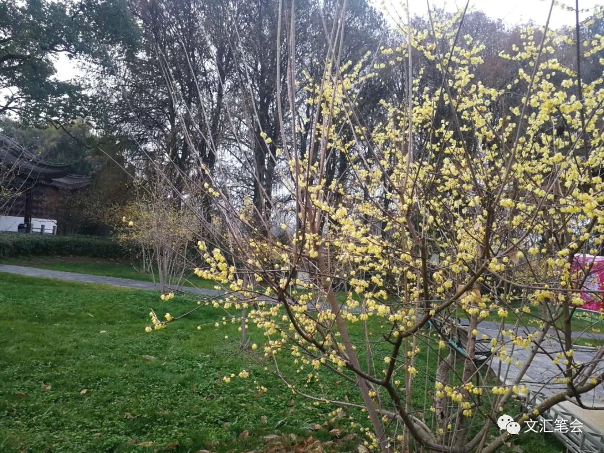

这是我热爱的武汉啊（作者：秦小羊）
原文链接 备份链接 秦小羊是我的朋友，也是另一位武汉人。最近我们互相之间聊得最多的，当然是我们生活的这座城市。1100万人口，留守了900万人。在这个春节，一切变得浩荡，一切也变得静止。但不论如何，爱是世间永恒的东西。对家人的爱，对朋友的 …
【武汉特稿】我的梅园，我的江城 | 舒飞廉
日期:2020年02月17日 10:00:38 作者:舒飞廉

本文配图均由作者提供
早上六点半起床，并未像前几天一样，看到东湖上空瑰丽的朝霞。窗外蒙蒙晨色，天光破晓，密云未雨，阴晴难定。身为公务员的妻子，初六值班，初七、初八、初九、初十上班，眼镜、口罩、手套，自备早餐、中饭，用一个小喷壶盛酒精消毒液，开报备过的车出门，今天是初十一，立春，武汉围城的第十三天。我请她带我出门，稍稍绕路，去看一眼街景，看一眼梅园，然后再返回小区的超市买点菜。
环卫工人出动扫地车、洒水车，在清理其实干干净净的街道，大哥大姐们辛苦了，了不起。红绿灯依旧争分夺秒在各处路口跳动，指挥着寥寥无几的车辆，那些握住方向盘，赶往超市、医院、交通、公安、物资保障等系统工作的人，了不起。梨园医院的急诊科亮着灯，并不是人流如织、摩肩接踵唉。渔光小路上东湖绿道停车场，之前清早去东湖跑步，我也会将车停在其上的东南角，今天电子屏显示出来，还有999个停车位——这可能就是它全部车位的数字。一位老者扯着一条金毛在散步，老者口罩手套，带风帽的羽绒衣，狗无知无畏，不知道飞沫、粪口、气溶胶，也不知道接触传播，闻东嗅西，在去年迎军运会新栽的银杏树、栾树边弯腿尿尿，标记它的主权，这大概也是它每天非常珍贵的出门放风的几十分钟。由二环线转入东湖湖底隧道，我也想到了昨天晚上刷出的微博视频，一头野猪由二环线跑上二桥，奋蹄扬鬃，黑旋风一般，由武昌过长江到汉口，它再向前，可就是大名鼎鼎的华南海鲜市场与金银潭医院啊，它出自东湖中的植物园？森林公园？磨山？南望山？喻家山？珞珈山？桂子山？王小波在天有灵，来，为它点个赞。
东湖隧道四年前开放，簇簇新，灯火明亮，孤单一辆车穿行其中，好像是星舰在宽广宇宙，是有科幻感的——对，这个烟火味重的城市，第一次将科幻感与烟火味交会在一起。隧道之上，是东湖中间的“之”字形水杉路，通向磨山等三座山岭，磨山是东湖的心，“之”字路则是东湖的魂，在上面跑步，十公里，七八座拱桥上上下下，颇有一点道家内丹里运转河车的感觉。路边的数千株水杉树，每一棵都有合抱粗细，来自上世纪五六十年代恩施州利川县，水杉树被发现并人工培育种子，头两批新苗即移种至此。围绕着“心”“魂”，是而今东湖绿道串连起来的诸花园，梅花、樱花、海棠、牡丹、郁金香、荷花，会在随后的春夏次第开放。以我的兴趣，是梅花第一，海棠第二，牡丹第三，荷花第四，樱花第五，郁金香可看可不看。

梅园去得最多。我大学毕业后留在武汉，工作二十余年，每年春节都会去——过年的几天假，大概就是除夕在家做年饭、看春晚，初一早上回乡下拜年，中午返武汉，乘下午火车到广西南宁看望父母，初五六回来，梅园里逛逛，拍拍照片。待假期余额用尽，一年之计，春天也就起头了。春季之外，其他的时节得闲，由磨山上螺丝壳一般曲折的柏油路散步下来，也会走进绿叶成荫子满枝的梅园。枝叶丰满的梅树的确没有什么好看的，但梅园迷宫般的林阴道多幽静，后面的松林多美妙，那里的一二百棵马尾松，与磨山山道上的几十棵，可能是这个城市最好看的松树，矫矫龙姿，片片鳞甲，隐隐松涛，好像是由苏轼夜游的那个承天寺里搬运过来的。有一年，我不知道什么因缘，随喜过一次茶友会，会饮的地点，是在塘陂上的竹林，我就想，要是由我来主持，说不定会移师到明月朗照的青松间，隐士们做不成竹林七贤，也来做做五大夫试试？只是松脂的气味，可能会夺走他们特别珍视的生普洱白茶大红袍猴魁之类的奇香吧。
至于梅园绽放的梅花，自然是好看的。腊月的尾巴上，来看腊梅，正月之初，来看早梅，最近几年，气候暖，多半元宵节稍后就会达到极盛，所以元宵节来看梅园，车会一直堵到东湖路这边，翠柳街，黄鹂路，湖北日报社的门口。晚一点，到正月的结束，二月二，龙抬头，再来恶补的话，大概就是花褪残红青梅微微的梅落了。有一次，我就是这个时候，又遇上倒春寒，天快擦黑，细雨斜斜，风吹得黑伞都撑不住，好在穿的是有风帽的外套，索性闭了伞，撞进园，狂风将枝头的梅花搅到半空，漫天花雨，又贴到头脸，好像是泅游在诸色花瓣的海洋里，出来的时候，天黑了，门卫见园里无人，早早锁了门，求他半天，才放出来。所以，你们看，初十来梅园，是恰恰好，不迟，也不早，不是含苞欲放的沉默，也不是火力全开的热烈，不同品种的梅树开了六七成，一棵树上的花枝，开了六七分，一朵梅花的花瓣，也只打开了六七成。这六七分的“机”，就是下个月将要上市的恩施玉露“明前茶”的“机”啊，老子讲的，“冲气以为和”。
得到初十前后的闲暇，恰逢周末，又天公作美的话，我们就可以去梅园探梅。所谓天公作美，就是太阳早早升起来，天空湛蓝，手机里预告的PM２.５的数目字在５０以内，北风转换成东风，微微吹拂着湖边柳眼点点的垂柳，吹皱湖面的碧水，留在东湖里过冬的红嘴鸥都比平时游得快，因为湖水已经不再冰它们被东湖的鱼虾养得肥胖的屁股。排队买好其实很贵的门票，排队进入门禁，绕过俗不可耐的照壁，就可以放眼平缓起伏的土坡塘陂之上的胜景：万千株梅花固然是矫若游龙，花树下的万千游客，说是翩若惊鸿，好像不太对，由惊鸿降格成放出鸭舍的难免会光顾周黑鸭的鸭子，好像也不对。这样的人流，大概就是三月初武汉大学樱花道上看樱花的人流，五一十一江汉路步行街上逛街的人流，寒假第一天地铁光谷广场站回家的大学生的人流，新年里东湖公园里举着手机仰着头看灯会的人流。脸色与花色交织在一起，汗味与花香交织在一起，五颜六色的衣裳与梅树交织在一起，花海即是人海。这种热闹鲁迅同学不喜欢的，他老人家嘲讽成群结队的“清国留学生”去瞻仰彼国的国粹，东京郊区樱花烂漫，绯红如轻云。但是也不一定啊，如果回到自己的家国，在一个和平的盛世，在平安喜乐的市民们中间，大先生说不定，也会纡尊降贵，不，他本来就不讲究尊，不讲究贵，来与我们咸与探梅，与民同乐，说不定，他还要发扬他爱照相爱臭美的天性，用华为P３０手机，照出好几个G的美照去和他的广平兄分享呢。
而且，梅花也不止是“绯红如轻云”。红梅的冷艳，再多一分，大概是杏花，杏花再多一分，大概就近乎于桃花了；白梅的玉润，也排在苍白的樱花与小家碧玉的梨花之间；绿梅的淡雅，模仿的正是柳眼与榆钱乍现时的一泡绿意，再往前，就是浅绿，就是翠绿，就是苍绿；黄梅莹莹鹅黄，也没有掉进油菜花铺天盖地蜜蜂嗡嗡营营的恶趣味里。
梅园经营既久，好处不仅在千万株的总数上面。全国、全世界的梅树的品目被搜罗过来，仔细查看标签，会发现此处实则也是梅树的一个博物馆，品种之外，树龄也在二三百年到最近数年之间滑动，老少大小，正如同汪曾祺所说“老翁携带幼孙，顾盼有情，痛痒相关”，聚散错落，同一性与差异性相运作。不同空间、不同时间、不同品种的梅花，经过数代园丁的培植，荟萃于此，梅园亦有自己的“结构性”与“流动性”唉，也在与川流不息的人潮进行对话，产生出“主体间性”，去年今日此园中，人面梅花也算是互相生发了。妻子有时候与我翻检儿子的照片，由坐在婴儿车里的婴孩，到牙牙学语的童子，到蹬着遛冰鞋满园飞奔的顽童，到背着双肩包香菱吟诗一般找作文素材的少年，到而今修长挺拔的青年，他在梅园留下了很多照片，我与妻子也在各自的照片里来到白发星星的中年。我相信其他武汉的家庭也是这样吧，不同时代，不同的相机，在梅园的花影里留下他们的图像，留下因时间流逝，刻写在他们身体与面孔上的痕迹，一如时光在满园的梅树上刻下来的曲折而坚韧的线条。全祖望《梅花岭记》，赞扬州城外梅花岭上“梅花如雪，芳香不染”，根柢在一个“烈”字。我们武汉梅园中的梅花，这一股刚烈之气，也是有的，只是在承平的年代，为人间的烟火气味染着，大概也有稍稍的纠偏，正在回到冲和吧。

十几分钟，自东湖隧道的磨山出口出来，由鲁磨路掉头，经过小李村、磨山茶园、樱园，再向前，便是东湖之滨的梅园。薄阴的晨光里，四五位环卫工人戴口罩打扫园林庭院，寂静无声，保安立在岗亭内，东湖边的几间自动售货亭布列种种零食饮料，电子屏依旧光芒闪烁，等候着来用支付宝扫码的旅客，东湖码头上的串串彩灯，也没有熄灭，只是从前各处满满当当的停车场里，没有看见一辆车，人流如织的磨山道、东湖道上，也没有一个人。此番景象，好像是《西游记》里黄风岭的黄风怪吹出漫天的黄风，将早起来东湖走路、跑步，游赏春色的市民，连人带车，刚刚吹走。恐怕也只有环卫工人，他们的小黄车，还有其他继续埋头工作的人们，吃到了灵吉菩萨的“定风丹”。妻子将车停在路边，她不介意扮作八戒的话，我也很想学悟空的“抓风”之术，由车门外抓一点“风尾”来闻闻，看看这风是不是虎风，是不是怪风，有何蹊跷。戴好口罩，推开车门，我说服妻子在驾驶座上等我，再十分钟，我就上车。
梅园的入口自然是封闭起来了，贴出的通知，说明1月24日即关门谢客，24日是除夕夜，围城的第二天。我向右沿着雕花窗的围墙走，一直走沿湖路上被铁锁锁住的一个铁门。围墙内腊梅怒放，其他一块块梅田开始发动，也只能隐隐看到花林松院了。这大概是梅园建成近七十年以来，唯一没有游客的几周吧，“一枝梅”馆中小湖上的那一群大白鹅，东南边妙香国池塘中的红嘴鸥，它们会发现，已接替成为梅园短暂的主人。满园春色关不住，除了色之外，关不住的，更有气味。我隔着铁门上生长铁锈的钢筋与铁链，隔着口罩，深吸了一口气，令之沉浸入我尚健康的肺腑，用力呼出来，稍稍滞留在温热而潮湿的口罩之中，一呼一吸，充溢着梅花的芳香，清凛，刚烈，如同茫茫雪地上的朝霞。这绝不是黄风怪的“腥风”。

离妻子给我放风的时间，尚有五分钟，我去湖边的石岸上，对着东湖拍了几张照片。东湖在新年第一缕东南风的吹拂之下，中间堤林拱桥，斗折蛇行，堤林两侧片片缬纹，浩渺清波，湖上就是武汉高耸低回、远近不一的建筑群。我所站立的石岸，是各种画册与影集里，大家最常用的拍摄武汉的位置，近乎VR的视角，朝北，自西往东，大概有270度的视野。左边起首是掩映在南望山与喻家山之间的光谷，那条盘旋在光谷广场之上的“龙灯”，其实是好看的。往右，是黛眉一般的珞珈山——这个美妙的名字，是闻一多1928年来武汉大学执教时改定的，1938年武汉会战，诸军政首长，也办公居住在山中，山后诸大学的学府，琅琅书声，弦歌不绝。往右，是水果湖省府的办公区，水果湖是东湖的一个小内湖，湖中的汉秀剧场，武汉的“小红帽”，轻盈地浮在水波上。往右，是中南医院，门前的两行梧桐树极美。往右，是东湖宾馆，的确有藏龙卧虎的气势。往右，是收藏有越王勾践剑与曾侯乙编钟的省博物馆，石家河的陶器、盘龙城的青铜器、梁庄王墓的金器，也非常好看。往右，是东湖公园，公园最美的地方，是杨柳龙钟婆娑的“老鼠尾”，也就是当年周苍柏先生治“海光农圃”的地方。往右，是红钢城，武钢的烟囱林，今天它吐出的白烟，并不让人心乱。往右，是武汉高铁站，曾经获得“鲁班奖”的高铁站，2012年“全球最美的建筑”，远远望去，就像一只展翅徐徐憩下的黄鹤。如果是晴朗的春晨，朝阳就会在高铁站稍稍偏东南的东湖的波光里升起来，黄昏时分，在东湖宾馆之后，远远的正在建设中的城中第一高楼“绿地中心大厦”的旁边嵌落下去。
东湖岸边往上延伸开去，就是东湖开发区、洪山区、武昌区、青山区的千百街道与社区，以自西向东的蛇山为脊线，文教卫，科研院所，高校林立，有辛亥革命首义的旧地，有昙华林街区的文艺范，有宝通寺与长春观的晨钟暮鼓，有户部巷挥汗如雨、热气腾腾的小吃，有几经兴废的黄鹤楼，黄鹤楼上，可俯看长江自西南流向东北——对，武昌，就是江南开始的地方。经由长江大桥、长江二桥、白沙洲大桥、鹦鹉洲大桥、二七大桥、天兴洲大桥或者长江隧道、公铁隧道，穿越过浩浩汤汤江水澄黄的长江，对面就是武汉三镇中的江北两镇，自云梦古泽化身而来的江汉平原中流出汉水，长江的第一支流，将江北分成汉水之西的汉阳与汉水之东的汉口。俞伯牙与钟子期的汉阳，高山流水遇知音，岳武穆的汉阳，苍苍横翠微，龟山上高高的电视塔，归元寺，汉阳造，沌口新区，看足球赛的球场，可以听歌剧与交响乐的琴台大剧院。张之洞的汉口，由张公堤保护下的蒹葭沼泽里出现的天下名镇，它的内核，是英法德俄日列国先后来建的租界，殖民者殊异的格调，今天还依稀可以辨认。租界美轮美奂的老房子之外，我还特别喜欢一处民国的建筑，是日租界东边黄浦路上的古德寺，由上世纪一二十年代，隆希与昌宏两位法师主持建造，以印度那烂陀寺为蓝本，将古希腊、伊斯兰、哥特式、中国风格综合起来，筑起的精美丛林。1911年秋冬，阳夏保卫战发生，清军与革命军即大战于此，然后转入汉口的街巷，进行残酷的巷战，革命军牺牲4000余人，部分即被古德寺的前身，古德茅蓬的僧人掩埋在寺后的菜地中。古德寺离华南海鲜市场大概是两公里。
当日为中国转向现代化，寻求现代性，以湘鄂两省青年子弟为主的革命军，与清军血腥巷战的武汉三镇，两千年之前，屈原也来过。“乘鄂渚而反顾兮,欸秋冬之绪风。步余马兮山皋,邸余车兮方林”，这是三闾大夫在《涉江》中的诗句，也是在冬天里。我眼前的这片东湖，大概就是鄂渚中的一块吧，从前它也是长江的故道，我们的城市，其实是在江底拔地而起的。我猜屈子大概是行舟汉水，来到汉口，进入长江，准备换船西南逆水，前往洞庭湖，由洞庭湖上溯沅江，去往“汪渚”与“辰阳”的。今天东湖公园里，建行吟阁怀念他，并没有错。一千年前，苏子放舟在赤壁之下，“西望夏口，东望武昌”，他在下游的黄州，向西望的夏口，即是当下的武汉，向东望的武昌，即当下的鄂州，并不远。由此次疫情了解湖北的诸位已经知道，黄州、鄂州、武汉，事实上已经同城化了，一荣俱荣，一损俱损。苏子的赤壁问答，宇宙之悟，突破时间与空间之维，持留生命个体与他者所共享的“造物者之无尽藏”，我觉得是对屈子“鄂渚反顾”发出“天问”的超越，我们是可以通过自己的主动作为，重返日常生活，来把握存在的意义的。我想海德格尔也好，德里达也好，可能会同意苏轼的这个“后现代性”的领悟。

扯远了，我还有两三分钟的放风时间，我要戴着我还残存着梅花香气的口罩，回到妻子的车上去，黄风怪并没有离开，定风丹也没有被大师兄由灵吉菩萨那里领回来。妻子将车停在“绿水青山驿站”的旁边，驿站之下，是荷花园，“三月三，藕出簪”，枯荷残梗下，应该马上就会发出新的苗裔吧。这个荷花园与相关的研究机构，在全国都很有名，上世纪八十年代，武汉市府票选市花，在荷花与梅花中颇费踌躇，荷花不错的，遍布在我们的湖沼里，出淤泥而不染，濯清涟而不妖，屈子行吟时，手里说不定就持着它。没有满塘的莲藕，又哪来武汉的名菜排骨藕汤。后来还是梅花胜出了。我去查扬州的市花，也是八十年代，先选了琼花，后来又补上了芍药，唉。这一回疫情过去，我们再去蛇山上，龟山上，黄鹤楼下，古琴台，行吟阁，古德寺的庭院，珞珈山，火神山，雷神山，多种一点梅花吧。
什么时候疫情能结束呢？李白有诗：“黄鹤楼中吹玉笛，江城五月落梅花”，希望借他的吉言，最后一位病人，能够在五月与可敬可爱的医生护士们作别，重返到无尽藏的日常生活里，好好吃一顿，睡一觉，“肴核既尽，杯盘狼藉，相与枕藉乎舟（家）中，不知东方之既白”。我们经过了冬天绪风里的“反顾”，也能够去彻底反省如何建设一个后现代性的城市，包容不同的阶层，不同的声音，包容微笑，也包容血泪，包容幸福，也包容病痛，包容生，也包容死。这个充满了风险与希望、光荣与梦想、尊严与牺牲的伟大城市，不是东方的芝加哥、威尼斯、底特律——这个地方是武汉，江汉朝宗，西边云梦泽，东边大别山，中国的肺腑，人类的名城。这是痛苦的反思，会比屈子与东坡更痛苦，会是另外一次自我的首义，城市的革新。不要辜负死者——是他们血泪中的挣扎，让我们能够苟活下去，是祖国伸手将我们由没顶的深渊里扯了出来，也不要忘记世界的援助。记住这些让我们慌乱、笨拙、恐惧、无助、痛苦、绝望、崩溃，失去体面与尊严的寒夜，记住我们的哭泣与哀号，记住空荡荡的街道、匆匆往回的救护车、昏黄街灯下的装尸袋。不经一番寒彻骨，哪得梅花扑鼻香。

妻子重新发动车，她赶着到社区去，好在不堵车，不会迟到。我的目标是小区的中百超市，这一回我来得早，说不定可以买到红菜薹和小白菜？依靠这十分钟的放风，这一口梅花的真气，中百超市的售货大姐们售卖的食物，再自我隔离一二周，说不定，城就开了，春天就来了，还能赶得上梅园的尾声，海棠、樱花与牡丹全盛的春光。
2020，02，13，武汉
*文汇独家稿件，转载请注明出处。
作者：舒飞廉
编辑：吴东昆
责任编辑：舒 明
原文链接 备份链接 秦小羊是我的朋友，也是另一位武汉人。最近我们互相之间聊得最多的，当然是我们生活的这座城市。1100万人口，留守了900万人。在这个春节，一切变得浩荡，一切也变得静止。但不论如何，爱是世间永恒的东西。对家人的爱，对朋友的 …
原文链接 备份链接 今天是武汉封城后的第十二天。 仍旧是完全宅在家里的一天。 马上就是封城两周，但拐点似乎还远远没有到来。武汉之外，或者说湖北之外的区域数据看来是暂时问题不大，但专家仍旧提醒要注意宅在家里一段时间，以防功亏一篑。 绝大部分 …
原文链接 备份链接 今天是武汉封城的第十一天。 封闭这么久，对于一个人口过千万的特大城市来说，是一个前所未有的挑战。 今天下雨了，天气很糟。典型的南方冬天，又潮又冷。 在夜色中看到邻居家的灯火已经是我最欣慰的事情，这个时候万家灯火让我觉得 …
原文链接 备份链接 今天是武汉封城的第六天，昨天给大家介绍了武汉人爱吃什么，今天就给大家介绍一下，武汉我自己最心爱的几处风景。 黄鹤楼自然不用说了，五A级景区，游客如织。但我还是最喜欢晴川阁。晴川阁在汉阳，晴川历历汉阳树，芳草萋萋鹦鹉洲。 …
原文链接 备份链接 物资抵达武汉只是第一步，如何将这些物资及时、有效、尽量低损耗地分发给有需要的人，更是难题 文 |《财经》记者 刘以秦 编辑 | 谢丽容 2月16日上午10点，12辆货车抵达武汉武东收费站，他们连夜从江西赣州赶来，载 …